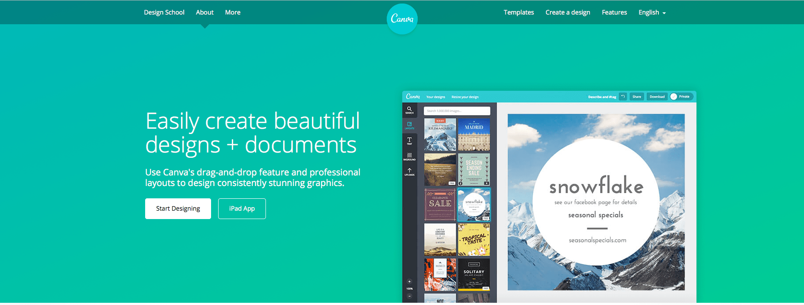
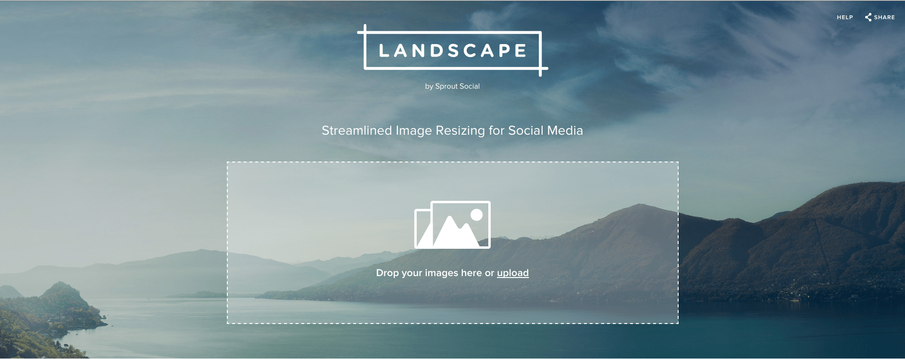
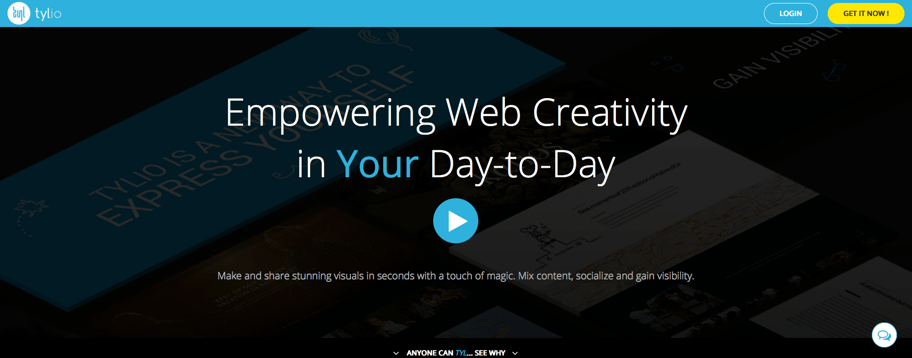
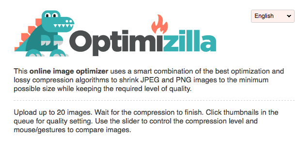

With the advent of Content Management Systems (CMS), creating blogs have become a breeze -- enabling people from all walks of life to express themselves or perhaps share what they know through their writing. Today, we don't even need to have blogs to share content to people. Social media websites like Facebook and Twitter allow people to share content to their friends almost effortlessly.
"Almost" being the operative word. Social media is all about grabbing attention and one cannot grab attention if one's content isn't really worthy of attention. No, I am not being mean. I mean every word of it. Powerful words may draw attention, yes, but as the saying goes, "a picture speaks a thousand words". So you need images, but not just any image -- you need powerful images.
Think of it like this: powerful images speak a thousand powerful words.
Like most things, that is easier said than done. Powerful, impactful and eye-catching images are hard to come by, difficult to create and sometimes you have to hire designers to do the work for you. This might be okay for huge companies or people with huge pockets but what about the freelancer? The hobbyist? The person who just wants to the world some good and share great stuff?
People have had problems like this for years so naturally, like the brilliant little creatures that we are, sought to create some solutions. The following are web applications that will help you generate great image content for social media purposes FOR FREE.
Canva
 Canva allows you to create great designs for different purposes in for free. You can design for different social media sites and more formats. Although it is free to use, a lot of its good content cannot be exported without those annoying watermarks without paying for them, but the free ones suffice for creating great content.
Desygner
Desygner is relatively newer than Canva and is, I assume, its rival in the business — and rightly so. Like Canva, Desygner allows you to create great content fast. With the slogan “Simply design”, it allows you to just design, quickly and easily, knowing the quality will be great. It also gives you more free stuff than Canva. Like Canva, it gives you the option to save your design as a JPEG, PNG or PDF file.
Landscape

If you already have a great looking graphic you got from someone or somewhere and you want to make it look good on social media, you can crop it using Sprout Social’s Landscape app. Just click it to upload or just drag your files. Then choose your formats. After that, just follow the instructions and export!
Tylio
 Tylio is a little hard to explain, but basically, you add your content and the app just automagically layouts and designs it for you, creating a great looking page that can be used for a variety of different purposes.
Optimizilla
 Great looking graphics sometimes come at great sizes and that is bad news for your blog. Optimizilla allows you to significantly reduce the size of your images without actually making it too ugly.